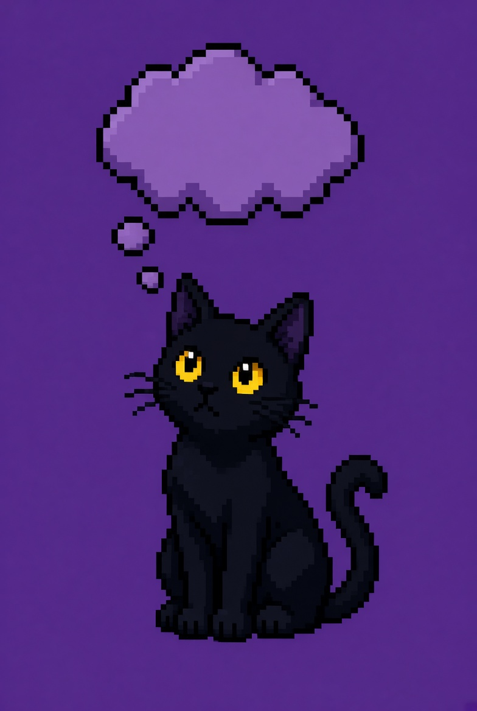

Par o Impar contra el Gato Villano
Se juegan 5 rondas alternadas. En las rondas donde tirás vos, el Gato Villano intenta adivinar si el resultado es par o impar. Si falla, ganás un punto.
En las rondas donde tira el Gato Villano, primero elegís "Par" o "Impar" sin saber el resultado. Si acertás, ganás un punto.
Mesa de juego
Ronda 1 de 5
Aciertos: 0 / 5
Presioná "Tirar dados" para comenzar.

El Gato Villano va a tirar. ¿Qué creés que va a salir?